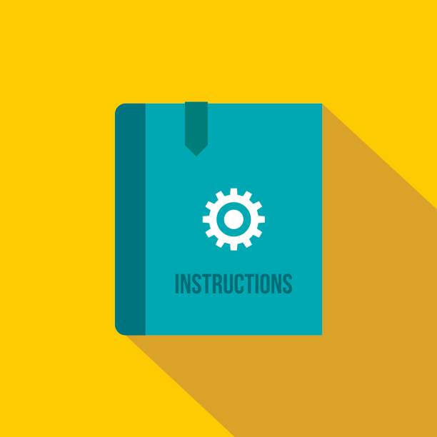

☰
Instructions

- Quizzo is an educational quiz game based on Overlap Add and Overlap Save Method of Digital Signal Processing.
- Select the most relevant option out of the four options for each question.
- Each correct attempt carries 1 points and each incorrect answer reduces the score by 0 point.
- The game displays live score and score percentage.
- The difficulty level increases when you choose to play on another level.
All the best!